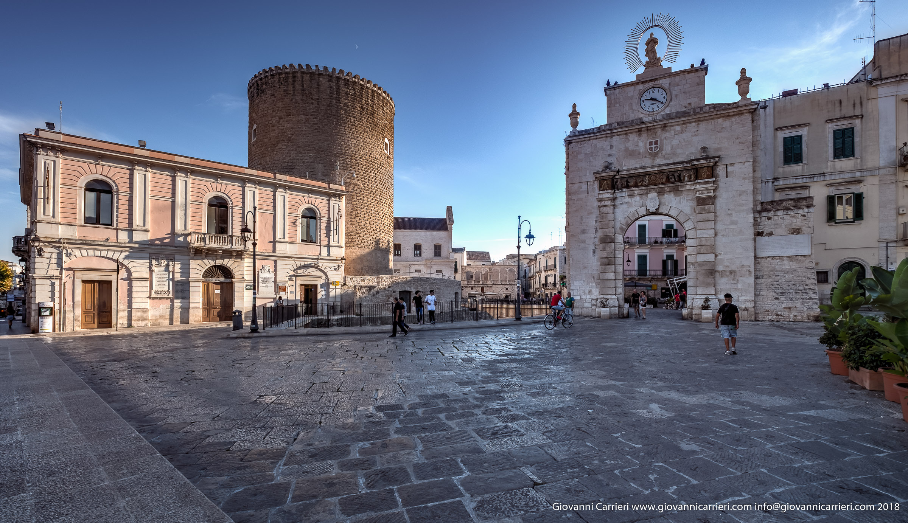
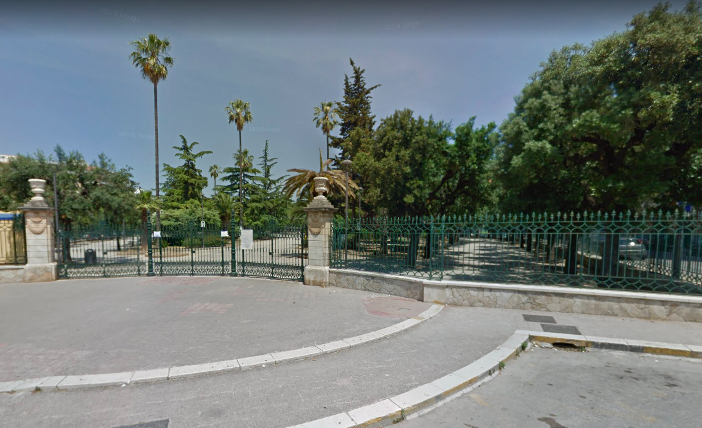

La Porta Baresana è l’antico ingresso al centro storico di Bitonto dal lato di Bari: una porta monumentale che unisce funzione
difensiva e valore simbolico. Costruita in epoca medievale e rimaneggiata nel tempo, segnava il confine tra la città murata
e il mondo esterno. Oggi è uno dei punti più riconoscibili della città vecchia, testimonianza concreta della storia urbana e
dell’identità bitontina.
Villa Comunale di Bitonto

La Villa Comunale di Bitonto è il principale polmone verde della città, nata come spazio pubblico per il tempo libero e la socialità.
Tra viali alberati e scorci storici, rappresenta da decenni un luogo di incontro quotidiano, dove natura e vita cittadina si intrecciano,
raccontando l’evoluzione urbana e sociale di Bitonto.
Compilare il form cliccando nella barra di navigazione "Chiosco",per prenotazioni di aperitivi e alchool